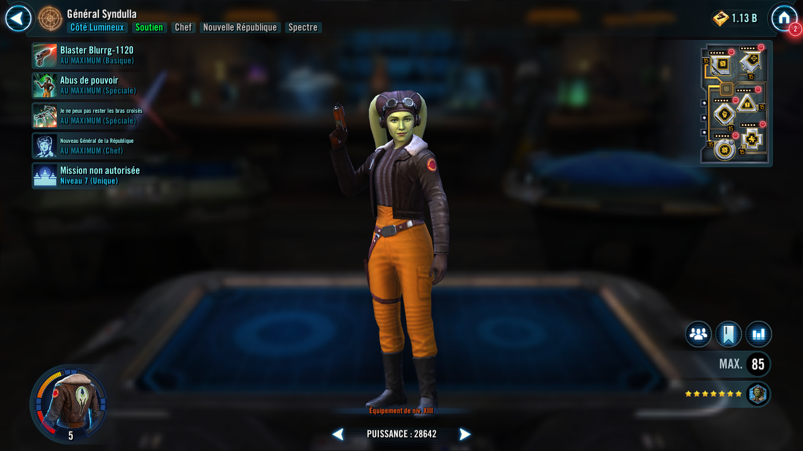
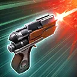

General Syndulla
A fearless leader who uses Perfect Defense to empower her allies in preserving the freedom of the galaxy.
A fearless leader who uses Perfect Defense to empower her allies in preserving the freedom of the galaxy.


Deal Physical damage to target enemy. If the enemy is buffed, call another random Spectre ally to assist and dispel all buffs on target enemy. On Hera's turn, call a random Light Side Droid to assist, dealing 5% more damage for each active Spectre ally.
Dispel all debuffs on target Spectre ally and they gain Defense Up and Tenacity Up for 2 turns. Target ally gains 10% Offense and 10 Speed for 1 turn and an additional 10% Offense and 10 Speed for each debuff dispelled this way, then inflict Blind on target enemy at the end of their next turn for 2 turns.
Spectre allies who have Defense Up and Tenacity Up, dispel them and gain Perfect Defense for 2 turns if they don't already have it, which can't be copied.
Perfect Defense: +200% Defense; resist detrimental effects; immune to Defense Up and Tenacity Up
Deal True damage to all enemies. Remove 50% Turn Meter from all enemies with 50% or more Turn Meter. Dispel Fracture from all enemies and then inflict target enemy with Fracture until each other enemy has taken 1 turn or they are defeated, which can't be dispelled, evaded, or resisted. If target enemy has no other active ally, inflict Fracture until General Syndulla takes her next turn.
The strongest ally Tank Taunts and gains Protection Up (50%) for 2 turns.
At the start of battle, Spectre allies and Garazeb "Zeb" Orrelios gain 50% Max Health and Max Protection, and 150 Speed for 1 turn. On their turn, Spectre allies can ignore Taunt to target an enemy with Exile or Fracture. At the start of each Spectre ally's and Zeb's turn, they gain Offense equal to 50% of their Defense until the end of their turn.
Enemies with Exile and Off Balance deal 20% less damage.
If the enemy with Fracture is defeated, remove 100% Turn Meter from all enemies, which can't be evaded or resisted.
Whenever a Spectre ally deals multiple instances of damage on their turn, they inflict 6 stacks of Damage Over Time to the target enemy for 1 turn.
The first time a Spectre ally's or Zeb's Health is reduced to 30%, they recover 50% Health and Protection. The first time a Spectre ally's or Zeb's Health reaches 1%, they dispel all debuffs on themselves, gain Damage Immunity for 1 turn, take a bonus turn and gain 100% Offense on their next turn. If an enemy is defeated in this turn, that ally recovers 50% Health and Protection. Otherwise that ally is defeated.

At the start of each Spectre ally's turn, they gain 40% Defense Penetration if they have Exile or Perfect Defense, until end of their turn. Whenever a Spectre ally with Perfect Defense uses a Special ability, they deal True damage to all enemies, which can't be evaded.
While a Spectre ally or Garazeb "Zeb" Orrelios is Taunting, all the other non Taunting Spectre allies and Zeb have +25% Defense.
Whenever a buff is dispelled from an enemy, Spectre allies and Zeb gain 15% Turn Meter.
Whenever enemy units have their Turn Meter manipulated, a random Spectre ally gains Defense Up and Tenacity Up for 1 turn.
Whenever Perfect Defense expires on a Spectre ally, they gain benefits based on their role:
- Attackers : Critical Damage Up for 2 turns
- Tanks : Protection Up (50%) for 2 turns
- Healers and Supports : Speed Up for 2 turns
Omicron Boost : While in Territory Wars: Spectre allies and Zeb have +100% counter chance and Potency.
Whenever a Spectre ally or Zeb recovers Health, other Spectre allies and Zeb recover half of that amount at the end of that turn. Whenever a Spectre ally or Zeb attacks out of turn, they remove 15% Turn Meter from target enemy (excluding Galactic Legends). The first time a Spectre ally or Zeb loses all their Protection, they recover 50% Protection. Whenever a Spectre ally or Zeb is Stunned, they dispel it and inflict Buff Immunity and Healing Immunity for 1 turn on all enemies.